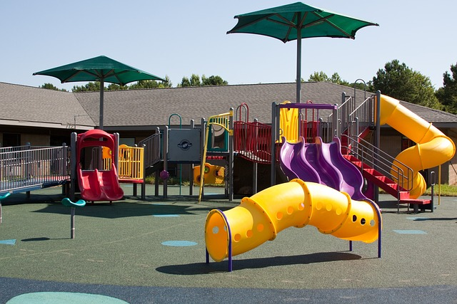

There are plenty of things to do on the farm!
The farm park has many activities for people to do. Some of these activities are hayrides, pumpkin picking, and a corn maze. You can also: - visit the animals and see how they live in their natural habitat - play with farm tools, such as a pitch fork or shovel - pick your own produce from the garden to take home with you!
Embarking on a stroll through the idyllic expanse of a farm promises an enchanting adventure for all who dare to wander. Each step unveils a tapestry of sights and sounds, from the gentle rustle of wheat fields dancing in the breeze to the melodic chirping of birds perched upon weathered fences. Along winding paths lined with wildflowers, curious minds encounter friendly cows grazing lazily, while mischievous goats playfully butt heads in nearby pastures. The air is crisp with the scent of earth and hay, and the horizon stretches endlessly, inviting exploration. As the sun dips low, casting a golden hue over the rolling hills, one can't help but feel a profound sense of peace and connection with nature, making every moment of the farm walk an exhilarating and soul-nourishing experience. Sign up for a guided walk using the form.